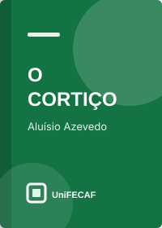
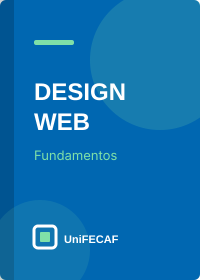
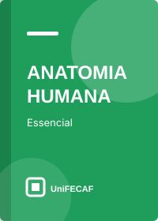

Dom Casmurro
Bentinho relembra sua vida e a dúvida que o acompanha: Capitu o traiu ou não?
Saiba mais
Machado de Assis, 1899. Disponível em versão digital e impressa.
Acervo aberto 24 horas
Livros, artigos e materiais de apoio da UniFECAF reunidos em um só lugar. Pesquise, leia e estude no computador ou no celular.
A Biblioteca Digital UniFECAF nasceu para aproximar os estudantes do conhecimento. Aqui você encontra obras de referência, livros das bibliografias básicas e complementares dos cursos e conteúdos de apoio produzidos pelos professores.
O acesso é feito com o seu login de aluno, sem filas e sem prazos de devolução para os títulos digitais. Nas unidades presenciais, o espaço físico oferece salas de estudo, empréstimo de exemplares impressos e atendimento especializado.
Milhares de títulos para ler online.
Livros impressos nas unidades.
Ambientes silenciosos e em grupo.
Ajuda com normas ABNT e TCC.
Destaques do acervo escolhidos pela equipe da biblioteca.
Bentinho relembra sua vida e a dúvida que o acompanha: Capitu o traiu ou não?
Machado de Assis, 1899. Disponível em versão digital e impressa.

Um retrato do Rio de Janeiro do século XIX e das relações em uma habitação coletiva.
Aluísio Azevedo, 1890. Leitura indicada para Letras e Ciências Sociais.

HTML semântico, CSS, layout responsivo e acessibilidade em exemplos práticos.
Material de apoio da disciplina Design Web. Apenas versão digital.
Planejamento, organização, direção e controle explicados para quem está começando.
Bibliografia básica dos cursos de Administração e Gestão.

Os sistemas do corpo humano com ilustrações detalhadas e exercícios de fixação.
Indicado para Enfermagem, Educação Física e Biomedicina.
Da escolha do tema à formatação final nas normas ABNT, passo a passo.
Guia recomendado para todos os cursos de graduação.
O maior acervo físico da instituição, com salão de leitura, cabines individuais e computadores para consulta. É também onde funciona o atendimento de apoio à pesquisa e a orientação de normas ABNT.
Segunda a sexta, 8h às 22h · Sábado, 8h às 14h
Um ambiente pensado para o trabalho em equipe: salas de estudo em grupo que podem ser reservadas, mesas com tomadas e Wi-Fi e um pequeno acervo de livros das bibliografias básicas.
Segunda a sexta, 9h às 21h
Para quem estuda a distância. Todo o acervo digital fica disponível pelo Ambiente Virtual de Aprendizagem, com leitura online, marcações e atendimento por chat com a equipe da biblioteca.
Disponível 24 horas, todos os dias
Ficou com dúvida sobre acesso, empréstimos ou reserva de salas? A equipe da biblioteca está pronta para ajudar pelos canais abaixo.
Alunos EAD também podem falar com a biblioteca pelo chat do AVA, no menu “Biblioteca”.